地政学
ラホールはインド国境に近いパンジャーブの中心都市で、ワガ国境の儀礼や軍事的緊張を日常の近くに抱えます。イスラマバードやカラチとは違い、歴史、言語、農村後背地、教育機関を通じて国内政治へ影響します。

🇵🇰 パキスタン / アジア / World City Atlas
パンジャーブの歴史都市であり、国境、教育、食文化、映画、宗教儀礼、庭園、繊維産業が重なるパキスタン第二の都市です。ムガル帝国の記憶と現代の大気汚染、住宅拡大、若い労働力が同じ街路に現れます。
都市の骨格
ラホールはラーヴィー川の低地、ムガル期の城塞と庭園、英領期の官庁街、大学、バザール、新興住宅地を抱えます。インド国境が近く、文化都市であると同時に国家の境界を意識する都市です。
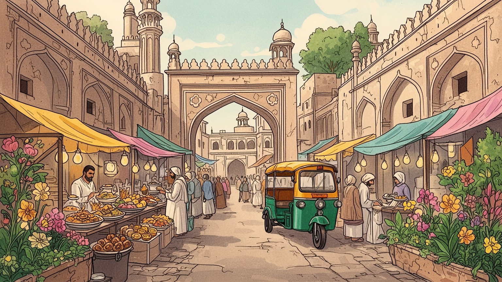
ラホールはインド国境に近いパンジャーブの中心都市で、ワガ国境の儀礼や軍事的緊張を日常の近くに抱えます。イスラマバードやカラチとは違い、歴史、言語、農村後背地、教育機関を通じて国内政治へ影響します。
繊維、皮革、食品加工、出版、大学、医療、IT、建設、映画産業が都市を支えます。工場労働、バザール商人、配送、家事労働、学生のアルバイトが重なり、若い人口と女性の就労機会が重要な課題です。今も続きます。
バードシャーヒー・モスク、スーフィー聖者廟、シク教の記憶、ウルドゥー文学、パンジャーブ語の歌、映画、食文化が重なります。宗教は観光資源だけでなく、祭礼、慈善、学び、家族生活の時間を形作ります。今も続きます。
城塞、シャーラマール庭園、旧市街の門、フードストリートは人気の場所です。一方で住民には猛暑、スモッグ、渋滞、水、住宅費、教育費が日々の条件になります。観光都市の魅力は暮らしの負担と隣り合います。続きます。
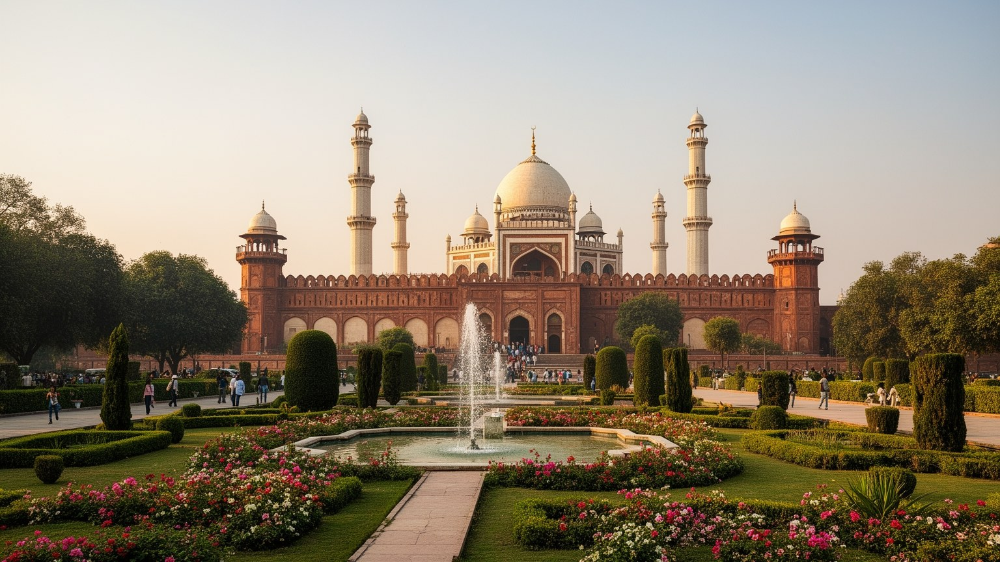
ラホールの歴史的な厚みは、ムガル帝国、シク王国、英領期、独立後の国家形成が同じ街区に残る点にあります。ラホール城とバードシャーヒー・モスクはムガル期の権威を示し、シャーラマール庭園は水路、影、対称性によって王権の秩序を都市の外へ広げました。シク王国の時代にはラホールが首都となり、グルドワラ、墓廟、宮廷文化の記憶が加わります。英領期には鉄道、大学、裁判所、博物館、広い道路が導入され、都市は行政と教育の中心へ変わりました。分離独立後は、ヒンドゥー教徒やシク教徒の流出とムスリム難民の流入によって、所有、記憶、近隣関係が大きく変わります。観光で見える建築は美しい遺産ですが、その背後には誰が去り、誰が住み、どの物語が残されたのかという問いがあります。修復された門や庭園は都市の誇りを支えますが、保存区域で暮らす住民には家賃、老朽化、商業化、交通規制の負担もあります。遺産は静かな展示物ではなく、生活、宗教、観光、行政が交渉する現場です。記憶を一つの宗教や王朝だけに閉じると、この都市が持つ混成の歴史は細ります。複数の時代を同時に語る姿勢が、遺産の公共性を守ります。観光案内の外側にある無名の建物も記憶を運びます。ラホールの遺産を読むことは、石造りの装飾を鑑賞するだけでなく、宗教共同体と国家の境界が都市の記憶をどう変えたかを見ることです。
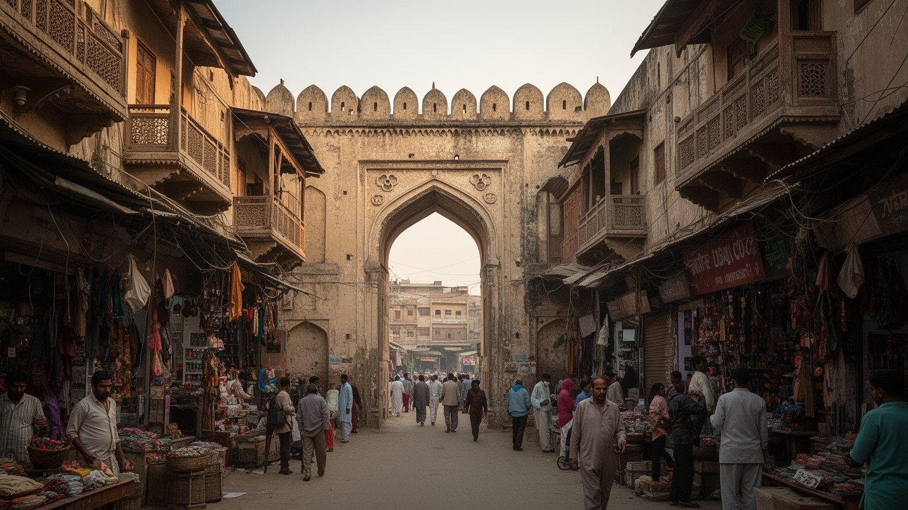
ラホールの都市構造は、ラーヴィー川沿いの低地、城壁に囲まれた旧市街、ムガル期の庭園、英領期の行政地区、そして外側へ広がる住宅地と幹線道路でできています。旧市街では狭い路地、門、バザール、モスク、職人の工房が密に重なり、歩行と小さな商いが街のリズムを作ります。一方、モデルタウン、グルベルグ、DHAのような地区では、車移動、私立学校、ショッピングモール、ゲート付き住宅地が日常を組み立てます。この差は単なる景観の違いではなく、所得、移動手段、公共サービスへのアクセスの差でもあります。ラーヴィー川は都市の端に見えますが、洪水、排水、地下水、廃水処理、土地開発を左右する基盤です。都市が外へ伸びるほど農地と村落は住宅地に変わり、道路と不動産が生活圏を再編します。旧市街の保存と郊外の拡大はしばしば別の議論に見えますが、どちらも水、交通、土地価格、行政サービスを通じて結びついています。低地の開発が進むほど排水の弱さは大きなリスクになり、広い道路が増えるほど徒歩で暮らす人の居場所は狭くなります。さらに、地図の上で近い場所でも、混雑や検問や橋の少なさで移動時間は大きく変わります。都市の境界の読み方も重要です。ラホールを読むには、城塞の美しさだけでなく、川、排水路、郊外の区画、旧市街の密度を一つの地図で見る必要があります。
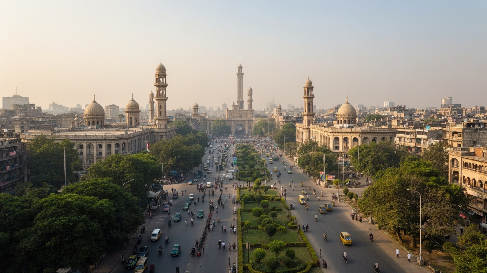
ラホールはパキスタン第二の都市であるだけでなく、インドとの国境に最も近い巨大都市の一つです。ワガ国境の旗降納式は観光的な見せ場として知られますが、その背後には分離独立、戦争、避難、家族の断絶、軍事的警戒の記憶があります。都市の文化はアムリトサルやデリー、パンジャーブ全体と深くつながってきましたが、現在の国境は移動を厳しく制限します。この近さは、ラホールの地政学を日常の感覚にします。国内政治では、ラホールはパンジャーブ州の権力、政党組織、裁判所、メディア、学生運動、商工団体を通じて大きな発言力を持ちます。カラチが港と金融、イスラマバードが連邦首都を象徴するなら、ラホールは人口最大州の社会的重心です。ここで起きる抗議、宗教運動、司法判断、教育政策は全国へ波及します。国境の存在は軍事だけでなく、貿易、ビザ、巡礼、家族史、スポーツ観戦の感情にも影響します。近いのに行き来しにくい隣接性が、ラホールの文化的な開放感と政治的な閉塞感を同時に作ります。選挙、裁判、抗議活動のたびに、道路や広場は政治の舞台になり、住民は都市の緊張を移動の遅れとしても経験します。その負担も都市経験です。国境都市としての緊張と、国内政治を動かす中心性が重なるため、ラホールは文化都市という穏やかな呼び名だけでは捉え切れません。
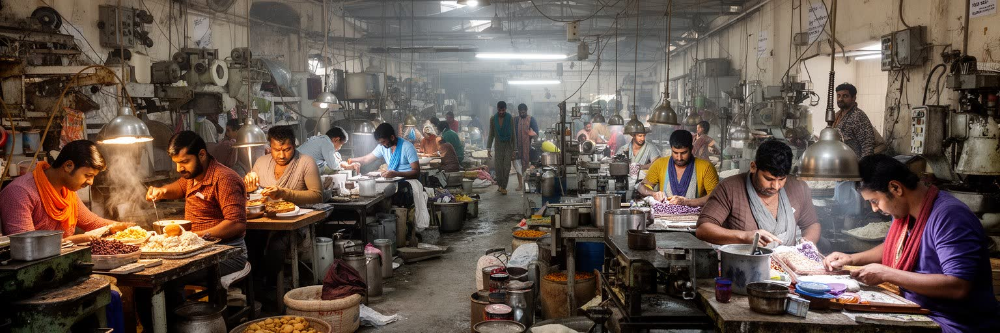
ラホールの経済は、繊維、衣料、皮革、食品加工、印刷、医療、教育、建設、IT、映画、広告、物流が重なって動いています。周辺の農村と工業地帯から原料と労働力が入り、バザール、卸売、工場、大学、病院、ショッピングモールがそれぞれ別の雇用を生みます。工場で働く若者、家内労働を担う女性、配達員、建設労働者、家庭内労働者、教師、医師、ソフトウェア技術者は、同じ都市にいても賃金、移動、社会的安全が大きく異なります。非公式部門の商いは都市の柔軟さを支えますが、労働時間、保険、賃金交渉、職場の安全が弱いまま残りやすい領域でもあります。女性の教育水準が上がる一方、通勤の安全、家族の規範、職場環境は就労を左右します。さらに、輸出向けの衣料と国内向けの小売は世界市場、為替、電力価格、物流の乱れに影響されます。企業の成長があっても、停電、燃料費、家賃、学校費用が家計を圧迫すれば、都市の豊かさは広がりません。若い労働者が技能を得て中間層へ進めるかは、職業訓練、交通、女性の安全、労働法の実効性に左右されます。安い労働だけに頼る成長は長続きしません。ラホールの経済力を数字だけで見ると、こうした見えにくい労働を落としてしまいます。都市の競争力は、工場や大学の数だけでなく、働く人が健康に住み、移動し、学び直せる条件によって測られるべきです。
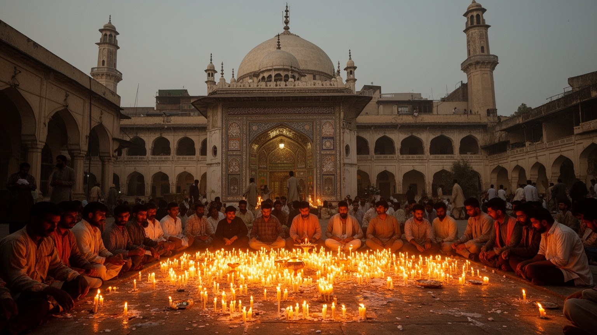
ラホールの宗教生活は、金曜礼拝の大きな流れ、ラマダンの夜、イードの買い物、聖者廟の参詣、慈善、家族の儀礼によって街の時間を刻みます。バードシャーヒー・モスクのような壮大な建築は都市の象徴ですが、実際の信仰は地区の小さなモスク、マドラサ、廟、墓地、家の中の祈りにも広がります。スーフィー聖者の廟では、音楽、施し、祈願、食の分配が人々を結び、階層や出身地を越えた一時的な共同性を作ります。同時に、宗教は政治や社会規範とも結びつき、少数派への圧力、表現の制限、女性の行動範囲をめぐる議論も生みます。シク教、キリスト教、ヒンドゥー教の記憶や小さな共同体も、都市の歴史を構成します。廟やモスクの周辺には物売り、料理、寄付、交通整理、警備が生まれ、宗教空間は経済と福祉の場にもなります。災害や貧困の時には、信仰に基づく支援が行政の隙間を埋めることもあります。宗教間の緊張を小さくするには、法の保護と近所での信頼の両方が欠かせません。多数派の祭礼が街を満たす時ほど、少数派の安心も問われます。宗教を観光名所としてだけ扱うと、生活の秩序と緊張を見落とします。ラホールでは祈り、食、服装、教育、慈善、音楽、政治が近い距離で交わり、都市の公共空間の使い方を決めています。その多層性こそ、宗教都市としてのラホールを理解する入口です。
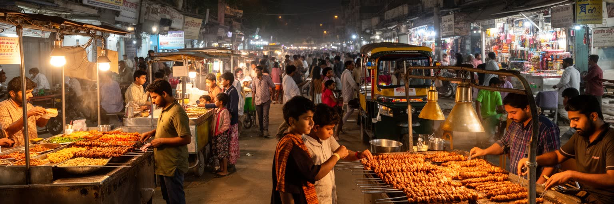
ラホールは食の都市として強い自負を持ちます。ニハリ、パヤ、チャナ、ビリヤニ、ケバブ、ハリーム、ラッシー、甘味、屋台の軽食は、観光客の楽しみである前に、家族の外食、学生の夜食、労働者の朝食、祭礼の食事として都市を支えます。旧市街やフードストリートでは、香辛料、炭火、油、甘い飲み物、人の声が夜の景観を作ります。食文化は豊かですが、その裏側には仕込み、食肉流通、牛乳の供給、衛生管理、長時間労働、女性の見えにくい家事労働があります。外食のにぎわいは、都市の社交を広げる一方、公共空間を使える人と使いにくい人の差も映します。男性中心の夜の街に、女性や家族がどの程度安心して参加できるかは、都市の包容力に関わります。旧市街の食の名声は観光収入を生みますが、混雑、廃棄物、騒音、衛生、家賃上昇も伴います。店が観光客向けに変わるほど、住民の日常食との距離も広がります。朝の市場、昼の屋台、夜の家族外食は、それぞれ違う労働時間と客層を持ちます。食べる時間を追うだけで、都市の階層とジェンダーが見えてきます。衛生の制度も重要です。食は階層を越える共通語に見えますが、価格、移動、衛生、健康、宗教上の規範によって経験は変わります。ラホールの食を読むことは、味の豊かさだけでなく、誰が作り、誰が座り、誰が深夜まで働くのかを見ることです。
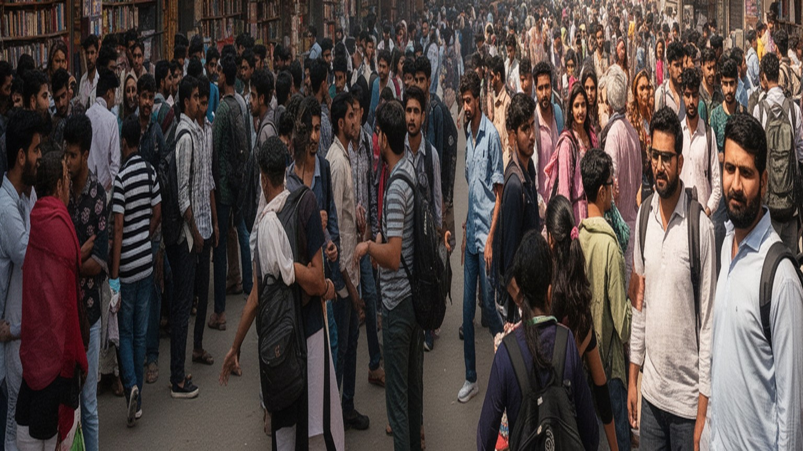
ラホールはパキスタン有数の教育都市です。パンジャーブ大学、政府系大学、医科大学、工学系機関、私立大学、宗教学校、語学学校、予備校が集まり、全国から学生を引き寄せます。教育は上昇の道である一方、階層差を映す鏡でもあります。英語教育を受けられる私立学校、低料金の公立学校、宗教教育、家庭教師、試験準備産業は、同じ都市の中で子どもの将来を分けます。大学周辺には書店、カフェ、寮、印刷、議論の場が生まれ、文学、ジャーナリズム、演劇、政治運動を支えてきました。映画産業、テレビ、デジタル配信、新聞、詩の朗読は、教育都市の議論を大衆文化へつなげる回路にもなります。制作現場には脚本、編集、音響、広告、印刷、配給の仕事があり、若い表現者の訓練場所にもなります。若い人口が多いことは都市の活力ですが、雇用が十分でなければ、学歴は失望にも変わります。女性の高等教育は家族の期待と職場の現実の間で揺れ、通学の安全や交通費も進路を左右します。地方から来る学生にとって、ラホールは自由と競争が同時にある場所です。研究や起業を支える制度が弱いと、優秀な学生ほど国外や他都市へ向かいます。ラホールを知識都市として読むには、名門校の威信だけでなく、誰が質の高い教育に届き、どの言語で学び、卒業後にどんな仕事へ入れるのかを見る必要があります。
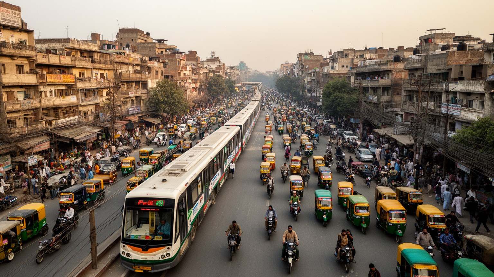
ラホールの日常は、旧市街の密な住宅、古い中産階級地区、政府職員の住宅、無認可の集落、ゲート付き郊外、新しいアパートが同時に存在することで成り立ちます。家族の近さは支援の網になりますが、若者や女性にとっては行動の制限にもなります。水、電力、排水、学校、病院、バス、買い物の距離は、家賃や土地の所有と同じくらい生活を左右します。中心部では混雑と老朽化が重く、郊外では道路と車への依存が強まります。住宅開発は安全で整った環境を売りにしますが、都市を所得ごとに分け、公共空間を減らすこともあります。低所得層の住まいは、法的地位が弱いほど立ち退きや災害にさらされやすくなります。中間層にとっても、教育費、発電機や浄水の費用、医療費、結婚費用は家計を圧迫します。家の広さより、安定したサービスと近所の安全が生活の質を決める場面は多くあります。公園、歩道、図書館、安い診療所が不足すると、家の外で休む場所は市場や親族の家に限られます。公共空間の少なさは、子どもや高齢者の生活を狭めます。ラホールの暮らしを考えるには、家の中の家族関係、路地の近所づきあい、学校への送り迎え、買い物、礼拝、女性の移動、子どもの遊び場まで見る必要があります。都市の豊かさは、高級住宅地の広さではなく、普通の住民が安心して水を得て、歩き、学び、休めるかで決まります。
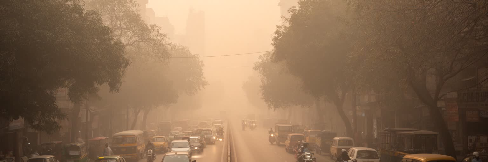
ラホールの交通は、オレンジライン、メトロバス、路線バス、オートリキシャ、バイク、車、徒歩が混ざり合う複雑な体系です。公共交通の整備は進みましたが、都市の広がりと車依存は渋滞を強め、通勤時間、燃料費、大気汚染を生活の負担にします。冬季のスモッグは深刻で、車両排出、工場、レンガ窯、農地の野焼き、気象条件が重なり、学校の休校や健康被害につながります。大気汚染は全員に見える問題ですが、影響は平等ではありません。屋外で働く人、子ども、高齢者、呼吸器疾患のある人、換気や空調の弱い住宅に住む人ほど負担が大きくなります。道路拡幅や高架道路は移動を速く見せますが、歩行者、露店、低所得者の移動を弱くすることがあります。公共交通が駅や幹線だけで止まると、最後の移動は徒歩、リキシャ、家族の送迎に頼ることになります。女性や学生にとっては、安全に待てる停留所と明るい歩道も交通政策の一部です。大気の悪化は病院、学校、職場の欠勤にもつながり、都市経済の損失になります。空気をきれいにする政策は、環境対策であると同時に貧困対策です。ラホールの交通を読むには、速い車線だけでなく、暑い日に歩く人、停留所で待つ人、マスクをして学校へ向かう子どもを見る必要があります。環境政策は都市の景観改善ではなく、健康と労働の問題として扱われるべきです。
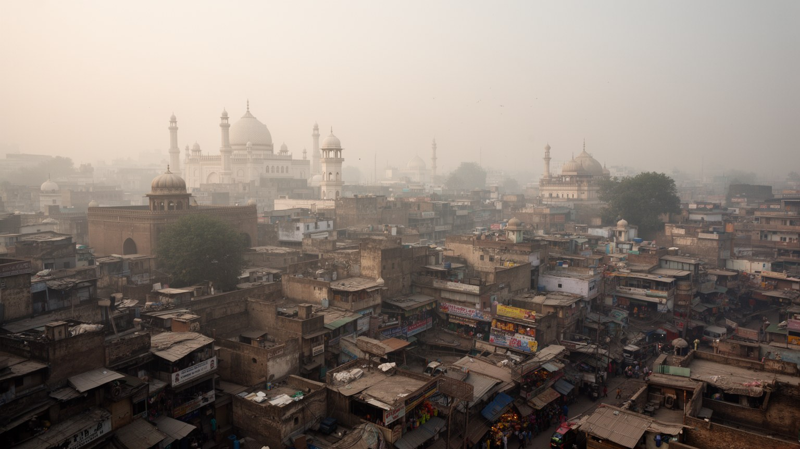
ラホールを世界都市として読む価値は、金融規模だけでは測れません。ここにはムガルの庭園、シクの記憶、英領期の大学、分離独立の傷、パンジャーブの農村後背地、若い学生、繊維工場、映画、食文化、宗教儀礼、国境の緊張が同じ都市圏に集まっています。カラチのような海港ではなく、イスラマバードのような計画首都でもないラホールは、内陸の文化的重心としてパキスタンの自己像を形作ります。一方で、スモッグ、渋滞、住宅格差、水と排水、女性の移動、少数派の安全、雇用の不安定さは、急成長する南アジア都市の課題をはっきり示します。観光客が見る城塞や食のにぎわいは重要ですが、その背後で都市を支える労働、家族、信仰、教育、環境リスクを合わせて見なければ、ラホールの全体像は見えません。国境に近いことは対立だけでなく、共有された言語、料理、音楽、家族史を思い出させます。保存と開発、信仰と表現、郊外化と旧市街の密度が同時に進む点に、この都市の難しさがあります。大都市としての順位より、社会の複数の層を同時に読めることがラホールの重要性です。数字の背後にある記憶と生活が、この都市を世界地図上で際立たせます。ラホールは過去の栄光を保存する都市であると同時に、若い人口が未来を試す都市です。その重なりを読むことで、南アジアの都市が持つ文化の厚みと社会的緊張が立体的に見えてきます。